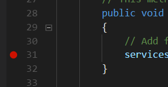

创建一个 ASP.NET Core 项目
如果你还在 Hello World 示例的那个目录里，请退回到 我的文档 或者 home 目录：
cd ..
接下来，使用 dotnet new 创建一个新项目，这一次添加几个选项：
dotnet new mvc --auth Individual -o AspNetCoreTodo
cd AspNetCoreTodo
这个命令，使用 mvc 模板创建了一个新的项目，并添加了一些额外的验证和安全性相关的内容。（我会在 安全性与身份 一章讲解安全性的内容）
-o AspNetCoreTodo 选项控制 dotnet new 为所有输出文件创建一个名为 AspNetCoreTodo 的目录。在项目文件夹里，你会看到增加了好几个文件，而你现在直接运行这个项目就好：
dotnet run
Now listening on: http://localhost:5000
Application started. Press Ctrl+C to shut down.
这个程序不再打印到控制台后直接退出，而是启动了一个 web 服务器，并在端口 5000 上等待访问请求。
开启你的网络浏览器，浏览 http://localhost:5000。你将看到 ASP.NET Core 程序的默认欢迎页面，说明你的程序工作正常！看够了这个页面之后，在终端窗口内按下 Ctrl-C 以便停止这个服务器。
一个 ASP.NET Core 项目的各部分
dotnet new mvc 模板为你生成了多个文件和目录。在默认创建的基本内容里，这几个是最重要的：
Program.cs和Startup.cs文件，设置 web 服务器和 ASP.NET Core 的处理管线。在Startup类里，你可以添加中间件，它们用于 处理和调整传入的请求、提供静态内容和错误页面。在这里，你还可以向依赖注入容器中添加你自己的服务（后面细说）。Models、Views，和Controllers目录里放置着 模型-视图-控制器（MVC，Model-View-Controller）架构的组件。下一章，你将一探他们三者的究竟。wwwroot目录里放着 CSS、JavaScript、图片文件 这些静态资源。默认情况下， bower 工具用于管理 CSS 和 JavaScript 的包，但是你可以使用任何喜欢的包管理器（npm 和 yarn 是常见的选项）。wwwroot里的文件将作为静态内容，将会自动被打包和压缩。appsettings.json文件里包含着 ASP.NET Core 启动时读取的配置信息。你可以用它来保存数据库连接字符串或者其它你不想硬编码的任何内容。
Visual Studio Code 技巧
如果你是初次使用 Visual Studio Code（或者 Visual Studio），下面这几个有益的小技巧将帮你轻松上手：
用 F5 运行（并调试断点）：使你的项目处于打开状态，按下 F5 以调试模式运行项目。这跟命令行的
dotnet run功能相同，但有一个额外好处——你可以在代码编辑器的左边栏上点击，以设置一个断点：
潜在问题的小灯泡提示：如果你的代码里有红色波浪线（编译错误），把编辑的光标放在红线里，到左边栏里找那个小灯泡的图标，小灯泡的提示信息会给出常见问题的修改建议，比如在代码里添加一个
using语句：
随手编译：使用快捷键
Command-Shift-B或者Control-Shift-B运行编译任务，这跟dotnet build的效果一样。
Git 小贴士：
如果你使用 Git 或者 GitHub 管理你的源码，眼下就是一个适合的时机，在项目目录下用 git init 来初始化你的 Git 仓库。请确保你添加了一个 .gitignore 文件用以忽略 bin 和 obj 这些目录。 GitHub 上 gitignore 模板仓库（https://github.com/github/gitignore）里的 Visual Studio gitignore 模板就很好用。
还有很多值得研究的内容，让我们马上开始构建这个应用吧！
Create an ASP.NET Core project
If you're still in the directory you created for the Hello World sample, move back up to your Documents or home directory:
cd ..
Next, create a new project with dotnet new, this time with some extra options:
dotnet new mvc --auth Individual -o AspNetCoreTodo
cd AspNetCoreTodo
This creates a new project from the mvc template, and adds some additional authentication and security bits to the project. (I'll cover security in the Security and identity chapter.)
The -o AspNetCoreTodo flag tells dotnet new to create a new directory called AspNetCoreTodo for all the output files. You'll see quite a few files show up in this project directory. Once you cd into the new directory, all you have to do is run the project:
dotnet run
Now listening on: http://localhost:5000
Application started. Press Ctrl+C to shut down.
Instead of printing to the console and exiting, this program starts a web server and waits for requests on port 5000.
Open your web browser and navigate to http://localhost:5000. You'll see the default ASP.NET Core splash page, which means your project is working! When you're done, press Ctrl-C in the terminal window to stop the server.
The parts of an ASP.NET Core project
The dotnet new mvc template generates a number of files and directories for you. Here are the most important things you get out of the box:
The Program.cs and Startup.cs files set up the web server and ASP.NET Core pipeline. The
Startupclass is where you can add middleware that handles and modifies incoming requests, and serves things like static content or error pages. It's also where you add your own services to the dependency injection container (more on this later).The Models, Views, and Controllers directories contain the components of the Model-View-Controller (MVC) architecture. You'll explore all three in the next chapter.
The wwwroot directory contains static assets like CSS, JavaScript, and image files. By default, the bower tool is used to manage CSS and JavaScript packages, but you can use whatever package manager you prefer (npm and yarn are popular choices). Files in
wwwrootwill be served as static content, and can be bundled and minified automatically.The appsettings.json file contains configuration settings ASP.NET Core will load on startup. You can use this to store database connection strings or other things that you don't want to hard-code.
Tips for Visual Studio Code
If you're using Visual Studio Code (or Visual Studio) for the first time, here are a couple of helpful tips to get you started:
- F5 to run (and debug breakpoints): With your project open, press F5 to run the project in debug mode. This is the same as
dotnet runon the command line, but you have the benefit of setting breakpoints in your code by clicking on the left margin:
- Lightbulb to fix problems: If your code contains red squiggles (compiler errors), put your cursor on the code that's red and look for the lightbulb icon on the left margin. The lightbulb menu will suggest common fixes, like adding a missing
usingstatement to your code:
- Compile quickly: Use the shortcut
Command-Shift-BorControl-Shift-Bto run the Build task, which does the same thing asdotnet build.
A note about Git
If you use Git or GitHub to manage your source code, now is a good time to do git init and initialize a Git repository in the project directory. Make sure you add a .gitignore file that ignores the bin and obj directories. The Visual Studio template on GitHub's gitignore template repo (https://github.com/github/gitignore) works great.
There's plenty more to explore, so let's dive in and start building an application!